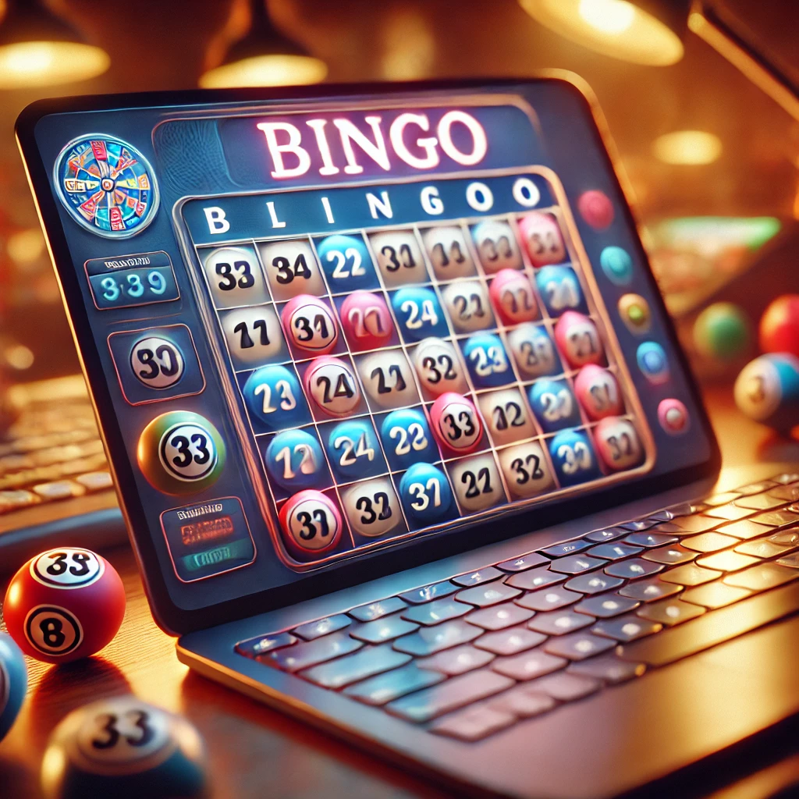
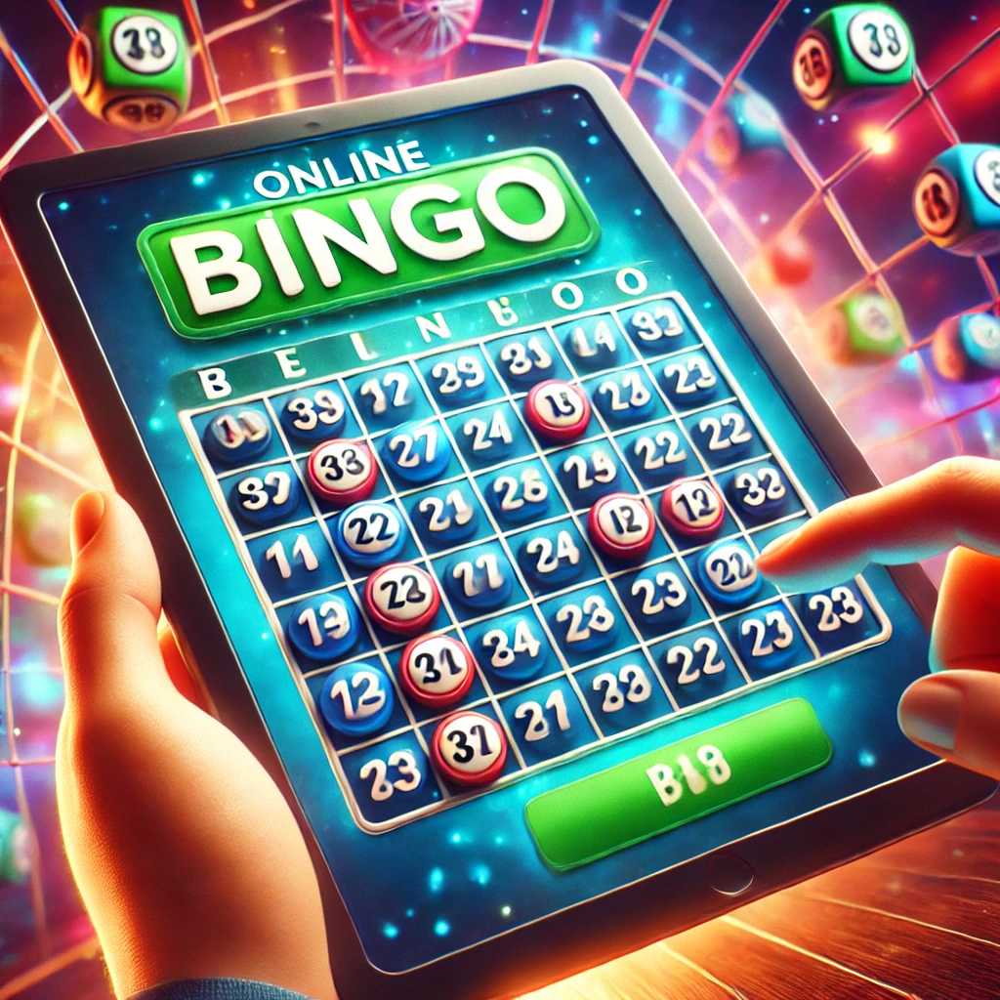

Comment jouer au bingo : les règles du bingo pour savoir jouer en 3 min
Le bingo en ligne se pratique avec des boules portant des numéros, un ou plusieurs cartons qui affichent des configurations de bingo avec des chiffres variés, et des pions pour occulter les numéros sélectionnés. Ces numéros, qui peuvent aller de 1 à 90 selon la version du jeu, sont tirés de manière aléatoire par un mécanisme ou choisis par le joueur lui-même. Les numéros sont organisés en lignes et colonnes sur les cartons. Le nombre de joueurs par partie est sans limite.
Concernant les règles, le joueur qui parvient le premier à former un motif prédéfini sur son carton gagne. Apprendre à jouer au bingo est extrêmement intuitif. Au démarrage de chaque partie, chaque joueur reçoit le matériel nécessaire. Le rôle du meneur de jeu est d'extraire les boules et de proclamer les numéros qu'elles portent. Si un numéro annoncé figure sur son carton, le joueur marque ou recouvre la case correspondante avec un pion.
Les règles bingo hors de France : attention aux variations
Il est essentiel de souligner que les règles du jeu varient significativement d'une région à l'autre. Par exemple, dans les versions britannique ou australienne du bingo, les joueurs doivent remplir une ligne entière pour remporter la partie. En Belgique, en revanche, le bingo prend la forme d'une machine à sous largement répandue, équipée d'un tableau comportant 26 emplacements et utilisant de 2 à 6 cartes. Pour gagner, il est nécessaire d'aligner une séquence de numéros à l'aide de cinq billes.
Les meilleurs logiciels pour jouer au bingo gratuit
Bien que le marché du bingo en ligne soit moins saturé que celui des casinos, il existe toujours une pléiade de développeurs qui ont osé se lancer dans ce créneau spécifique. Après une recherche approfondie, nous avons identifié tous les éditeurs offrant des jeux de loterie dans leur catalogue. Nous avons pris contact avec chacun d'eux, sans exception, pour négocier un accès gratuit à leurs jeux de bingo directement via notre plateforme. Découvrez maintenant sur notre site les meilleurs acteurs de ce secteur, y compris des noms renommés tels que :
- NYX
- Leander Game
- Tomhorn
- Wazdan
- 1×2 Gaming
- Caleta
- PariPlay
- Redrake
- Spinmatic…
Comment gagner au bingo ?
Pour maximiser vos chances de succès au bingo, il est essentiel de maîtriser certaines stratégies et astuces :
- Utiliser plusieurs cartons de jeu : Jouer avec un plus grand nombre de grilles augmente vos opportunités de cocher les combinaisons gagnantes.
- Choisir des grilles similaires : En optant pour des grilles avec des numéros proches, vous multipliez vos chances de cocher les bons numéros.
- Opter pour le mode automatique en ligne : Cette option permet au système de cocher les cases pour vous, minimisant ainsi les erreurs humaines.
- Éviter les parties très fréquentées : Moins il y a de joueurs, plus vos chances de gagner sont élevées.
- Jouer entre lundi et jeudi : Ces jours sont généralement moins prisés, ce qui réduit la concurrence.
- Privilégier les parties avec des gains ou jeux bonus : Ces parties offrent des opportunités supplémentaires de gagner.
Les différentes variantes de Bingo en Ligne
Le bingo se présente sous différentes variantes avec 30, 75, 80 ou même 90 boules. Comme leur nom l'indique, ces versions se distinguent principalement par le nombre de boules tirées au sort, tandis que les règles du jeu, elles, restent inchangées.
- 30 boules : Le jeu se déroule sur une grille de 9 cases. Pour gagner, le joueur doit cocher tous les numéros avant que les 30 boules ne soient tirées.
- 75 boules : Ce jeu est généralement proposé aux États-Unis avec des boules numérotées de 1 à 75 et une grille de 25 cases. Un point intéressant est que chaque lettre du mot « Bingo » figure en haut de chaque colonne.
- 80 boules : Cette version propose des opportunités de gain considérables avec une grille de 16 cases. Les combinaisons possibles sont limitées, augmentant ainsi les chances de succès.
- 90 boules : Ce bingo, souvent joué en ligne, se déroule sur une grille de 27 cases avec 90 boules. À la fin de chaque partie, trois gagnants sont désignés selon les combinaisons obtenues.
Origines du bingo : comment est-il apparu en France ?
Concluons ce dossier par une petite note de culture générale : le terme « bingo » signifie littéralement « atteindre sa cible ». Il était couramment utilisé par les pilotes de chasse américains pendant la Seconde Guerre mondiale lorsqu'ils parvenaient à abattre un avion ennemi. En tant que jeu, le bingo trouve ses origines en 1530, au cœur de l'Italie, où il était connu sous le nom de Lo Giuco Del Lotto.
Le bingo fait son apparition en France vers 1760, où il est réservé à l'aristocratie et à la bourgeoisie. À la fin du XVIIIe siècle, il sera remplacé par le loto Dauphin. Avant cela, il traverse l'Allemagne, l'Autriche, et l'Espagne, poursuivant son expansion à travers l'Europe. Dans certaines régions, le jeu est intégré dans des activités éducatives et devient un divertissement familial ou de groupe, apprécié même dans les milieux professionnels.
En 1929, le jeu atteint les États-Unis, où il prend le nom de Beano. Edwin S. Lowe, un fabricant et vendeur de jouets new-yorkais, séduit par ce jeu, y apporte plusieurs modifications. Avec l’aide du professeur de mathématiques Carl Leffler, il augmente le nombre de combinaisons possibles à 6 000, réduisant ainsi les chances de multiples gagnants par partie. C’est ainsi qu’est né le bingo tel que nous le connaissons aujourd'hui.